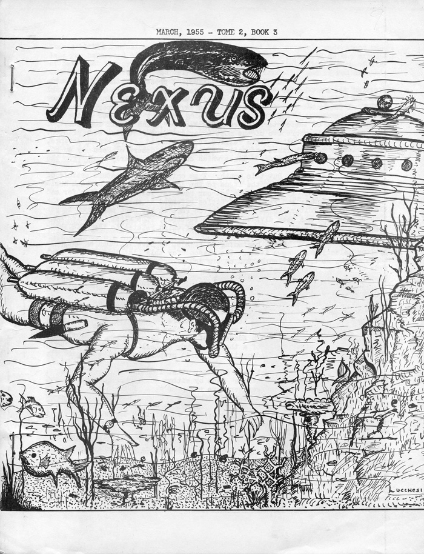

Couverture de Fate ce mois-làCouverture de Nexus de printemps

Près de Saint Louis (Etats-Unis), un femme observe : J'observais un avion à réaction
volant dans ma direction quand, soudain, sans coup férir, un étrange engin vint derrière lui et le fit disparaître
instantanément sous mes yeux. Cet engin avait une ouverture dans le champ de ma vue et près de l'avion. Après
l'avoir "absorbé", il s'arrêta et sa "porte" se ferma. Puis, il monta et descendit pendant environ 30 secondes, et
enfin disparut rapidement. Pendant qu'il était en train de descendre et de remonter, je pus voir de la vapeur ou
de la fumée sortir de ce qui ressemblait à des portières ou fenêtres rondes au sommet de cet engin. Ce dernier
avait la forme d'une cloche ordinaire et était assez vaste pour porter plusieurs avions du type de celui qu'il
avait capturé. Tout ceci se passa, pour ainsi dire, près de moi, et je pus parfaitement voir l'avion et l'engin.
L'avion était un léger chasseur bombardier, et il fut porté disparu par la radio de Saint Louis. Il ne fut jamais
retrouvé. Quelques temps après, un engin identique poursuivit 3 avions à réaction. Ces engins étranges sont, sans
aucun doute, les objets les plus rapides que j'aie jamais vus. J'ai minuté la vitesse des avions quand l'engin les
poursuivait : il parcourut en quelques secondes la même distance que les "Jet" en 3 mn."